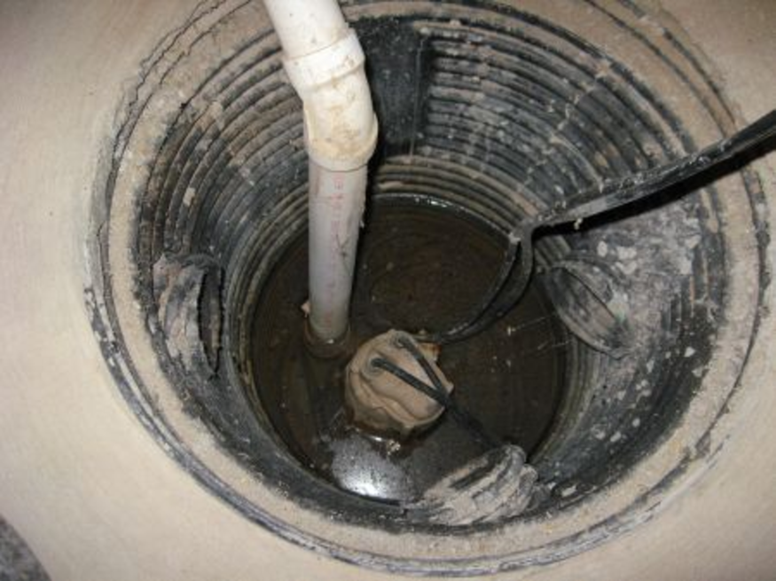

Section6.4Physics Applications: Work, Force, and Pressure¶ permalink
{In this section, we strive to understand the ideas generated by the following important questions:
How do we measure the work accomplished by a varying force that moves an object a certain distance?
What is the total force exerted by water against a dam?
How are both of the above concepts and their corresponding use of definite integrals similar to problems we have encountered in the past involving formulas such as “distance equals rate times time” and “mass equals density times volume”?
}
Subsection6.4.1Introduction
Figure6.4.1Three settings where we compute the accumulation of a varying quantity: the area under \(y = f(x)\), the distance traveled by an object with velocity \(y = v(t)\), and the mass of a bar with density function \(y=\rho(x)\).
In our work to date with the definite integral, we have seen several different circumstances where the integral enables us to measure the accumulation of a quantity that varies, provided the quantity is approximately constant over small intervals. For instance, based on the fact that the area of a rectangle is \(A = l \cdot w\), if we wish to find the area bounded by a nonnegative curve \(y = f(x)\) and the \(x\)-axis on an interval \([a,b]\), a representative slice of width \(\triangle x\) has area \(A_{\mbox{{slice}} } = f(x) \triangle x\), and thus as we let the width of the representative slice tend to zero, we find that the exact area of the region is
\[
A = \int_a^b f(x) \, dx.
\]
In a similar way, if we know that the velocity of a moving object is given by the function \(y = v(t)\), and we wish to know the distance the object travels on an interval \([a,b]\) where \(v(t)\) is nonnegative, we can use a definite integral to generalize the fact that \(d = r \cdot t\) when the rate, \(r\), is constant. More specifically, on a short time interval \(\triangle t\), \(v(t)\) is roughly constant, and hence for a small slice of time, \(d_{\mbox{{slice}} } = v(t) \triangle t\), and so as the width of the time interval \(\triangle t\) tends to zero, the exact distance traveled is given by the definite integral
\[
d = \int_a^b v(t) \, dt.
\]
Finally, when we recently learned about the mass of an object of non-constant density, we saw that since \(M = D \cdot V\) (mass equals density times volume, provided that density is constant), if we can consider a small slice of an object on which the density is approximately constant, a definite integral may be used to determine the exact mass of the object. For instance, if we have a thin rod whose cross sections have constant density, but whose density is distributed along the \(x\) axis according to the function \(y = \rho(x)\), it follows that for a small slice of the rod that is \(\triangle x\) thick, \(M_{\mbox{{slice}} } = \rho(x) \triangle x\). In the limit as \(\triangle x \to 0\), we then find that the total mass is given by
\[
M = \int_a^b \rho(x) \, dx.
\]
Note that all three of these situations are similar in that we have a basic rule (\(A = l \cdot w\), \(d = r \cdot t\), \(M = D \cdot V\)) where one of the two quantities being multiplied is no longer constant; in each, we consider a small interval for the other variable in the formula, calculate the approximate value of the desired quantity (area, distance, or mass) over the small interval, and then use a definite integral to sum the results as the length of the small intervals is allowed to approach zero. It should be apparent that this approach will work effectively for other situations where we have a quantity of interest that varies.
We next turn to the notion of work\knownindex{\lt main>work\lt /main>}: from physics, a basic principal is that work is the product of force and distance. For example, if a person exerts a force of 20 pounds to lift a 20-pound weight 4 feet off the ground, the total work accomplished is
\[
W = F \cdot d = 20 \cdot 4 = 80 \ \mbox{foot-pounds} .
\]
If force and distance are measured in English units (pounds and feet), then the units on work are foot-pounds\knownindex{\lt main>foot-pound\lt /main>}. If instead we work in metric units, where forces are measured in Newtons and distances in meters, the units on work are Newton-meters\knownindex{\lt main>Newton-meter\lt /main>}.
Of course, the formula \(W = F \cdot d\) only applies when the force is constant while it is exerted over the distance \(d\). In Preview Activity , we explore one way that we can use a definite integral to compute the total work accomplished when the force exerted varies.
Preview Activity
A bucket is being lifted from the bottom of a 50-foot deep well; its weight (including the water), \(B\), in pounds at a height \(h\) feet above the water is given by the function \(B(h)\). When the bucket leaves the water, the bucket and water together weigh \(B(0) = 20\) pounds, and when the bucket reaches the top of the well, \(B(50) = 12\) pounds. Assume that the bucket loses water at a constant rate (as a function of height, \(h\)) throughout its journey from the bottom to the top of the well.
Find a formula for \(B(h)\).
Compute the value of the product \(B(5) \triangle h\), where \(\triangle h = 2\) feet. Include units on your answer. Explain why this product represents the approximate work it took to move the bucket of water from \(h = 5\) to \(h = 7\).
Is the value in (b) an over- or under-estimate of the actual amount of work it took to move the bucket from \(h = 5\) to \(h = 7\)? Why?
Compute the value of the product \(B(22) \triangle h\), where \(\triangle h = 0.25\) feet. Include units on your answer. What is the meaning of the value you found?
More generally, what does the quantity \(W_{\mbox{{slice}} } = B(h) \triangle h\) measure for a given value of \(h\) and a small positive value of \(\triangle h\)?
Evaluate the definite integral \(\int_0^{50} B(h) \, dh\). What is the meaning of the value you find? Why?
Subsection6.4.2Work
\knownindex{\lt main>work\lt /main>}
Because work is calculated by the rule \(W = F \cdot d\), whenever the force \(F\) is constant, it follows that we can use a definite integral to compute the work accomplished by a varying force. For example, suppose that in a setting similar to the problem posed in Preview Activity , we have a bucket being lifted in a 50-foot well whose weight at height \(h\) is given by \(B(h) = 12 + 8e^{-0.1h}\).
In contrast to the problem in the preview activity, this bucket is not leaking at a constant rate; but because the weight of the bucket and water is not constant, we have to use a definite integral to determine the total work that results from lifting the bucket. Observe that at a height \(h\) above the water, the approximate work to move the bucket a small distance \(\triangle h\) is
\[
W_{\mbox{{slice}} } = B(h) \triangle h = (12 + 8e^{-0.1h}) \triangle h.
\]
Hence, if we let \(\triangle h\) tend to 0 and take the sum of all of the slices of work accomplished on these small intervals, it follows that the total work is given by
While is a straightforward exercise to evaluate this integral exactly using the First Fundamental Theorem of Calculus, in applied settings such as this one we will typically use computing technology to find accurate approximations of integrals that are of interest to us. Here, it turns out that \(W = \int_0^{50} (12 + 8e^{-0.1h}) \, dh \approx 679.461\) foot-pounds.
Our work in Preview Activity and in the most recent example above employs the following important general principle.
{
For an object being moved in the positive direction along an axis, \(x\), by a force \(F(x)\), the total work to move the object from \(a\) to \(b\) is given by
Consider the following situations in which a varying force accomplishes work.
Suppose that a heavy rope hangs over the side of a cliff. The rope is 200 feet long and weighs 0.3 pounds per foot; initially the rope is fully extended. How much work is required to haul in the entire length of the rope? (Hint: set up a function \(F(h)\) whose value is the weight of the rope remaining over the cliff after \(h\) feet have been hauled in.)
A leaky bucket is being hauled up from a 100 foot deep well. When lifted from the water, the bucket and water together weigh 40 pounds. As the bucket is being hauled upward at a constant rate, the bucket leaks water at a constant rate so that it is losing weight at a rate of 0.1 pounds per foot. What function \(B(h)\) tells the weight of the bucket after the bucket has been lifted \(h\) feet? What is the total amount of work accomplished in lifting the bucket to the top of the well?
Now suppose that the bucket in (b) does not leak at a constant rate, but rather that its weight at a height \(h\) feet above the water is given by \(B(h) = 25 + 15e^{-0.05h}\). What is the total work required to lift the bucket 100 feet? What is the average force exerted on the bucket on the interval \(h = 0\) to \(h = 100\)?
From physics, Hooke's Law \knownindex{\lt main>Hooke's Law\lt /main>} for springs states that the amount of force required to hold a spring that is compressed (or extended) to a particular length is proportionate to the distance the spring is compressed (or extended) from its natural length. That is, the force to compress (or extend) a spring \(x\) units from its natural length is \(F(x) = kx\) for some constant \(k\) (which is called the spring constant.) For springs, we choose to measure the force in pounds and the distance the spring is compressed in feet.
Suppose that a force of 5 pounds extends a particular spring 4 inches (1/3 foot) beyond its natural length.
Use the given fact that \(F(1/3) = 5\) to find the spring constant \(k\).
Find the work done to extend the spring from its natural length to 1 foot beyond its natural length.
Find the work required to extend the spring from 1 foot beyond its natural length to 1.5 feet beyond its natural length.
In certain geographic locations where the water table is high, residential homes with basements have a peculiar feature: in the basement, one finds a large hole in the floor, and in the hole, there is water. For example, in Figure 6.4.3
Figure6.4.3A sump crock.
where we see a sump crock 1 Image credit to \href{http://www.warreninspect.com/basement-moisture}{http://www.warreninspect.com/basement-moisture}.. Essentially, a sump crock provides an outlet for water that may build up beneath the basement floor; of course, as that water rises, it is imperative that the water not flood the basement. Hence, in the crock we see the presence of a floating pump that sits on the surface of the water: this pump is activated by elevation, so when the water level reaches a particular height, the pump turns on and pumps a certain portion of the water out of the crock, hence relieving the water buildup beneath the foundation. One of the questions we'd like to answer is: how much work does a sump pump accomplish?
To that end, let's suppose that we have a sump crock that has the shape of a frustum of a cone, as pictured in Figure 6.4.4. Assume that the crock has a diameter of 3 feet at its surface, a diameter of 1.5 feet at its base, and a depth of 4 feet. In addition, suppose that the sump pump is set up so that it pumps the water vertically up a pipe to a drain that is located at ground level just outside a basement window. To accomplish this, the pump must send the water to a location 9 feet above the surface of the sump crock.
Figure6.4.4A sump crock with approximately cylindrical cross-sections that is 4 feet deep, 1.5 feet in diameter at its base, and 3 feet in diameter at its top.
It turns out to be advantageous to think of the depth below the surface of the crock as being the independent variable, so, in problems such as this one we typically let the positive \(x\)-axis point down, and the positive \(x\)-axis to the right, as pictured in the figure. As we think about the work that the pump does, we first realize that the pump sits on the surface of the water, so it makes sense to think about the pump moving the water one “slice” at a time, where it takes a thin slice from the surface, pumps it out of the tank, and then proceeds to pump the next slice below.
For the sump crock described in this example, each slice of water is cylindrical in shape. We see that the radius of each approximately cylindrical slice varies according to the linear function \(y = f(x)\) that passes through the points \((0,1.5)\) and \((4,0.75)\), where \(x\) is the depth of the particular slice in the tank; it is a straightforward exercise to find that \(f(x) = 1.5 - 0.375x\). Now we are prepared to think about the overall problem in several steps: (a) determining the volume of a typical slice; (b) finding the weight 2 We assume that the weight density of water is 62.4 pounds per cubic foot. of a typical slice (and thus the force that must be exerted on it); (c) deciding the distance that a typical slice moves; and (d) computing the work to move a representative slice. Once we know the work it takes to move one slice, we use a definite integral over an appropriate interval to find the total work.
Consider a representative cylindrical slice that sits on the surface of the water at a depth of \(x\) feet below the top of the crock. It follows that the approximate volume of that slice is given by
Since water weighs 62.4 lb/ft\(^3\), it follows that the approximate weight of a representative slice, which is also the approximate force the pump must exert to move the slice, is
Because the slice is located at a depth of \(x\) feet below the top of the crock, the slice being moved by the pump must move \(x\) feet to get to the level of the basement floor, and then, as stated in the problem description, be moved another 9 feet to reach the drain at ground level outside a basement window. Hence, the total distance a representative slice travels is
\[
d_{\mbox{{slice}} } = x + 9.
\]
Finally, we note that the work to move a representative slice is given by
which, when evaluated using appropriate technology, shows that the total work is \(W = 1872\pi\) foot-pounds.
The preceding example demonstrates the standard approach to finding the work required to empty a tank filled with liquid. The main task in each such problem is to determine the volume of a representative slice, followed by the force exerted on the slice, as well as the distance such a slice moves. In the case where the units are metric, there is one key difference: in the metric setting, rather than weight, we normally first find the mass of a slice. For instance, if distance is measured in meters, the mass density of water is 1000 kg/m\(^3\). In that setting, we can find the mass of a typical slice (in kg). To determine the force required to move it, we use \(F = ma\), where \(m\) is the object's mass and \(a\) is the gravitational constant \(9.81\) N/kg\(^3\). That is, in metric units, the weight density of water is 9810 N/m\(^3\).
In each of the following problems, determine the total work required to accomplish the described task. In parts (b) and (c), a key step is to find a formula for a function that describes the curve that forms the side boundary of the tank.
Figure6.4.6A trough with triangular ends, as described in Activity 6.4.5, part (c).
Consider a vertical cylindrical tank of radius 2 meters and depth 6 meters. Suppose the tank is filled with 4 meters of water of mass density 1000 kg/m\(^3\), and the top 1 meter of water is pumped over the top of the tank.
Consider a hemispherical tank with a radius of 10 feet. Suppose that the tank is full to a depth of 7 feet with water of weight density 62.4 pounds/ft\(^3\), and the top 5 feet of water are pumped out of the tank to a tanker truck whose height is 5 feet above the top of the tank.
Consider a trough with triangular ends, as pictured in Figure 6.4.6, where the tank is 10 feet long, the top is 5 feet wide, and the tank is 4 feet deep. Say that the trough is full to within 1 foot of the top with water of weight density 62.4 pounds/ft\(^3\), and a pump is used to empty the tank until the water remaining in the tank is 1 foot deep.
When a dam is built, it is imperative to for engineers to understand how much force water will exert against the face of the dam. The first thing we realize is the force exerted by the fluid is related to the natural concept of pressure. The pressure a force exerts on a region is measured in units of force per unit of area: for example, the air pressure in a tire is often measured in pounds per square inch (PSI). Hence, we see that the general relationship is given by
\[
P = \frac{F}{A}, \ \mbox{or} \ F = P \cdot A,
\]
where \(P\) represents pressure, \(F\) represents force, and \(A\) the area of the region being considered. Of course, in the equation \(F = PA\), we assume that the pressure is constant over the entire region \(A\).
Most people know from experience that the deeper one dives underwater while swimming, the greater the pressure that is exerted by the water. This is due to the fact that the deeper one dives, the more water there is right on top of the swimmer: it is the force that “column” of water exerts that determines the pressure the swimmer experiences. To get water pressure measured in its standard units (pounds per square foot), we say that the total water pressure is found by computing the total weight of the column of water that lies above a region of area 1 square foot at a fixed depth. Such a rectangular column with a \(1 \times 1\) base and a depth of \(d\) feet has volume \(V = 1 \cdot 1 \cdot d\) ft\(^3\), and thus the corresponding weight of the water overhead is \(62.4d\). Since this is also the amount of force being exerted on a 1 square foot region at a depth \(d\) feet underwater, we see that \(P = 62.4 d\) (lbs/ft\(^2\)) is the pressure exerted by water at depth \(d\).
The understanding that \(P = 62.4d\) will tell us the pressure exerted by water at a depth of \(d\), along with the fact that \(F = PA\), will now enable us to compute the total force that water exerts on a dam, as we see in the following example.
Consider a trapezoid-shaped dam that is 60 feet wide at its base and 90 feet wide at its top, and assume the dam is 25 feet tall with water that rises to within 5 feet of the top of its face. Water weighs 62.5 pounds per cubic foot. How much force does the water exert against the dam?
Solution.
First, we sketch a picture of the dam, as shown in Figure 6.4.8. Note that, as in problems involving the work to pump out a tank, we let the positive \(x\)-axis point down.
Figure6.4.8A trapezoidal dam that is 25 feet tall, 60 feet wide at its base, 90 feet wide at its top, with the water line 5 feet down from the top of its face.
It is essential to use the fact that pressure is constant at a fixed depth. Hence, we consider a slice of water at constant depth on the face, such as the one shown in the figure. First, the approximate area of this slice is the area of the pictured rectangle. Since the width of that rectangle depends on the variable \(x\) (which represents the how far the slice lies from the top of the dam), we find a formula for the function \(y = f(x)\) that determines one side of the face of the dam. Since \(f\) is linear, it is straightforward to find that \(y = f(x) = 45 - \frac{3}{5}x\). Hence, the approximate area of a representative slice is
At any point on this slice, the depth is approximately constant, and thus the pressure can be considered constant. In particular, we note that since \(x\) measures the distance to the top of the dam, and because the water rises to within 5 feet of the top of the dam, the depth of any point on the representative slice is approximately \((x-5)\). Now, since pressure is given by \(P = 62.4d\), we have that at any point on the representative slice
\[
P_{\mbox{{slice}} } = 62.4(x-5).
\]
Knowing both the pressure and area, we can find the force the water exerts on the slice. Using \(F = PA\), it follows that
Finally, we use a definite integral to sum the forces over the appropriate range of \(x\)-values. Since the water rises to within 5 feet of the top of the dam, we start at \(x = 5\) and slice all the way to the bottom of the dam, where \(x = 30\). Hence,
In each of the following problems, determine the total force exerted by water against the surface that is described.
Figure6.4.10A trough with triangular ends, as described in Activity 6.4.9, part (c).
Consider a rectangular dam that is 100 feet wide and 50 feet tall, and suppose that water presses against the dam all the way to the top.
Consider a semicircular dam with a radius of 30 feet. Suppose that the water rises to within 10 feet of the top of the dam.
Consider a trough with triangular ends, as pictured in Figure 6.4.10, where the tank is 10 feet long, the top is 5 feet wide, and the tank is 4 feet deep. Say that the trough is full to within 1 foot of the top with water of weight density 62.4 pounds/ft\(^3\). How much force does the water exert against one of the triangular ends?
While there are many different formulas that we use in solving problems involving work, force, and pressure, it is important to understand that the fundamental ideas behind these problems are similar to several others that we've encountered in applications of the definite integral. In particular, the basic idea is to take a difficult problem and somehow slice it into more manageable pieces that we understand, and then use a definite integral to add up these simpler pieces.
\item To measure the work accomplished by a varying force that moves an object, we subdivide the problem into pieces on which we can use the formula \(W = F \cdot d\), and then use a definite integral to sum the work accomplished on each piece.
\item To find the total force exerted by water against a dam, we use the formula \(F = P \cdot A\) to measure the force exerted on a slice that lies at a fixed depth, and then use a definite integral to sum the forces across the appropriate range of depths.
\item Because work is computed as the product of force and distance (provided force is constant), and the force water exerts on a dam can be computed as the product of pressure and area (provided pressure is constant), problems involving these concepts are similar to earlier problems we did using definite integrals to find distance (via “distance equals rate times time”) and mass (“mass equals density times volume”).
\hrulefill
\begin{exercises}
\item Consider the curve \(f(x) = 3 \cos(\frac{x^3}{4})\) and the portion of its graph that lies in the first quadrant between the \(y\)-axis and the first positive value of \(x\) for which \(f(x) = 0\). Let \(R\) denote the region bounded by this portion of \(f\), the \(x\)-axis, and the \(y\)-axis. Assume that \(x\) and \(y\) are each measured in feet.
Picture the coordinate axes rotated 90 degrees clockwise so that the positive \(x\)-axis points straight down, and the positive \(y\)-axis points to the right. Suppose that \(R\) is rotated about the \(x\) axis to form a solid of revolution, and we consider this solid as a storage tank. Suppose that the resulting tank is filled to a depth of 1.5 feet with water weighing 62.4 pounds per cubic foot. Find the amount of work required to lower the water in the tank until it is 0.5 feet deep, by pumping the water to the top of the tank.
Again picture the coordinate axes rotated 90 degrees clockwise so that the positive \(x\)-axis points straight down, and the positive \(y\)-axis points to the right. Suppose that \(R\), together with its reflection across the \(x\)-axis, forms one end of a storage tank that is 10 feet long. Suppose that the resulting tank is filled completely with water weighing 62.4 pounds per cubic foot. Find a formula for a function that tells the amount of work required to lower the water by \(h\) feet.
Suppose that the tank described in (b) is completely filled with water. Find the total force due to hydrostatic pressure exerted by the water on one end of the tank.
\item A cylindrical tank, buried on its side, has radius 3 feet and length 10 feet. It is filled completely with water whose weight density is 62.4 lbs/ft\(^3\), and the top of the tank is two feet underground.
Set up, but do not evaluate, an integral expression that represents the amount of work required to empty the top half of the water in the tank to a truck whose tank lies 4.5 feet above ground.
With the tank now only half-full, set up, but do not evaluate an integral expression that represents the total force due to hydrostatic pressure against one end of the tank.